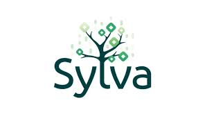
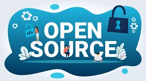
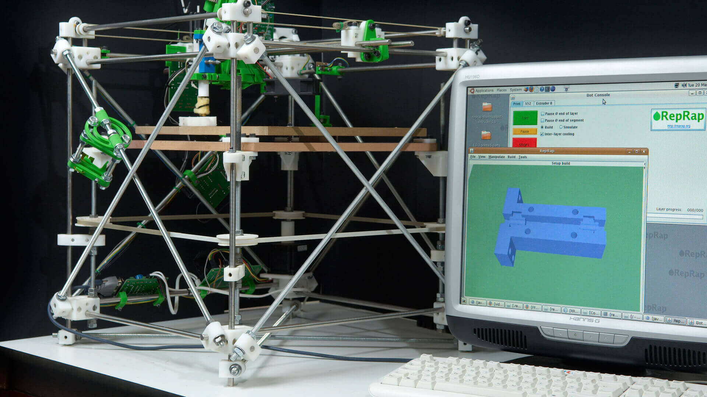
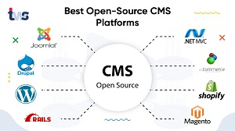

Le monde de la License Libre, et de l'Open Source
Décembre 2022
Novembre 2022
- 
L'Open Source arrive dans les banques
-

Le marché de l'Open Source, reste très dynamique
Octobre 2022
-
DALL.E, une intelligence artificielle qui transforme des mots clés en image
-
A Caen, le Dome est un établissement qui mène des projets de recherche, en libre accès à toute personne qui souhaitrait rejoindre un projet, ils incarnent la philosophie de la license libre et de l'Open Source.
Septembre 2022
-
Les fichiers de configuration de ce drone sont en libre accès sur le WEB !
- Apple se met à l'Open Source
Août 2022
-
Scrcpy, le logiciel open source pour avoir l'écran de son smartphone sur l'ordinateur !
-
Pour comprendre simplement la différence entre un logiciel libre et un logiciel payant
Juillet 2022
-
Un logiciel Open Source est il plus sécurisé ?
-
Linus Thorvalds, le créateur du système Linux, continue de publier des mises à jours de son système et facilite la comptatibilité Linux / Apple
Juin 2022
- 
L'Open Source, c'est une philosophie à part entière !
-
L'Open Source, c'est une philosophie entière !
Mai 2022
-
Google Cloud passe à des solutions Open Source
-
Comment l'Open Source est devenu peu à peu l'outil principal des hackers
Avril 2022
- 
RepRap, une imprimante 3D totalement Open Source
- 
Pourquoi utiliser un CMS Open Source pour la création de son site WEB ?
Mars 2022
-
Comment l'Open Source devient peu à peu la norme dans les entreprises
-
Recensement des paquets Unix Open Source les plus utilisés, une étude faite par Harvard
Février 2022
-
Google et Microsoft financent la sécurité de logiciels open source
-

FarmBot, le premier robot qui permet de gérer complètement son potager, totalement Open Source !